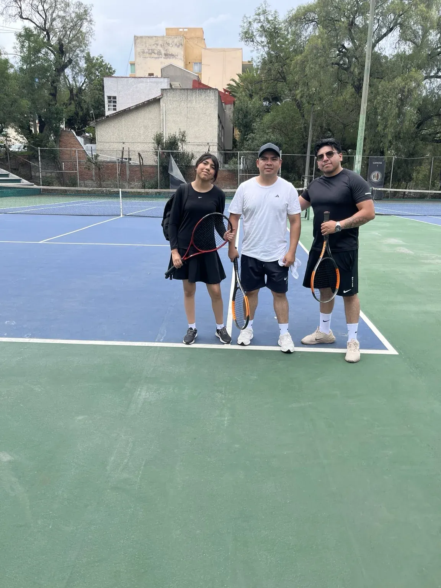

Clases de tenis para jóvenes de 12 a 16 años
Una etapa ideal para consolidar técnica, comprender mejor el juego y desarrollar confianza para competir o simplemente jugar mejor.
Atención en Satélite, Naucalpan, Polanco, Atizapán y áreas cercanas a Satélite.

Entrenamiento con propósito.
Técnica
Corrección y desarrollo de golpes, saque, devolución y juego de red.
Estrategia
Construcción de puntos, lectura del juego y toma de decisiones.
Condición física
Movilidad, coordinación y resistencia aplicadas al tenis.
Mentalidad
Concentración, confianza y preparación para partidos.
Clases personalizadas de aproximadamente 1 hora.
El entrenamiento se adapta al nivel y objetivos de cada joven, desde fundamentos hasta trabajo específico para competencia.
Antes de empezar.
¿Cómo conozco horarios y precios?
Los horarios, disponibilidad y precios se proporcionan directamente por WhatsApp.
¿Dónde se ofrecen las clases?
Las zonas de atención son Satélite, Naucalpan, Polanco, Atizapán y áreas aledañas a Ciudad Satélite.
¿Las clases se adaptan al nivel?
Sí. El entrenamiento se ajusta a la edad, nivel y objetivos de cada alumno.
Consulta disponibilidad
Escríbenos para conocer horarios, zonas disponibles y precios.